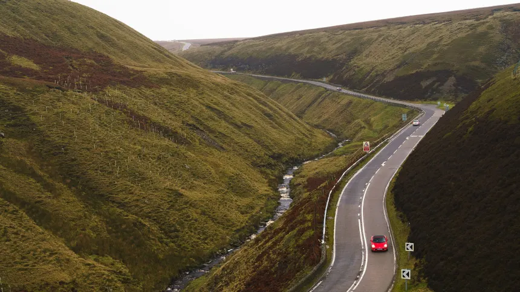
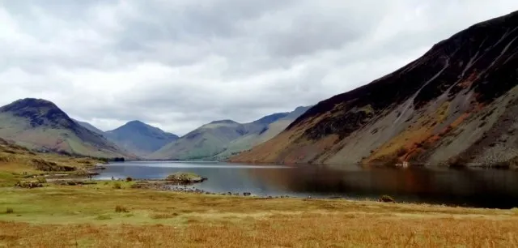

My Favorite UK Motorbike Routes
Discover the most thrilling and scenic motorbike routes across the United Kingdom. From challenging mountain passes to coastal roads with breathtaking views.
Snake Pass - Peak District
Distance: 10 miles (16 km)
Difficulty: Intermediate
Scenery: Moorland hills, reservoirs
One of the most famous motorbike routes in the UK. The A57 between Glossop and Sheffield offers challenging bends and stunning views of the Peak District National Park. This photo shows the actual road with its characteristic winding bends and moorland landscape.
Riding Tips:
- Watch out for sheep on the road
- Can be busy on weekends
- Icy patches in winter months
Wastwater - Lake District
Distance: 2 miles (3.2 km)
Difficulty: Expert
Scenery: Lake, mountains
Wastwater in the Lake District offers some of the most dramatic mountain scenery in England. While not the actual pass road, this area represents the stunning backdrop that makes Lake District riding unforgettable. The deepest lake in England surrounded by some of the highest peaks.
Riding Tips:
- Only for experienced riders
- Check weather before attempting
- Very narrow in places
The Yorkshire Dales

Distance: 15 miles (24 km)
Difficulty: Easy to Intermediate
Scenery: Rolling hills, dry stone walls
The Yorkshire Dales offers some of the most beautiful motorbike riding in the UK. This photo captures the essence of the Dales with rolling green hills, traditional dry stone walls, and winding country roads that seem to go on forever.
Riding Tips:
- Very popular with tourists
- Watch for cyclists and walkers
- Visit the caves while you're there
General Riding Advice for UK Roads
Weather
UK weather can change quickly. Always check the forecast and be prepared for rain, even on sunny days.
Road Conditions
Rural roads can have poor surfaces, potholes, and debris. Scan ahead and adjust your speed accordingly.
Traffic
Many popular routes have heavy traffic on weekends. Consider riding during weekdays for a better experience.
Safety
Always wear appropriate gear and ride within your limits. The best rides are the ones you come home from safely.